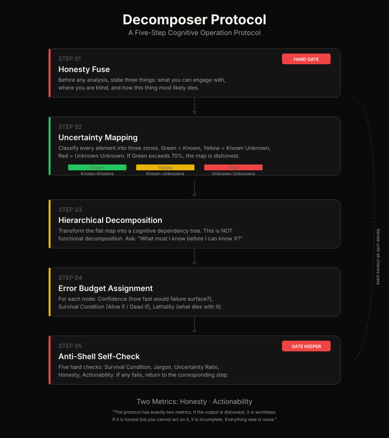

A cognitive protocol for decomposing any large, ambiguous goal into an actionable uncertainty map. Honest. Actionable. Domain-agnostic.
Not a malicious lie. Not a deliberate deception. But a lie nonetheless — a polished module list that mimics the shape of understanding without any of the substance. "User management. Payment system. Recommendation engine." It looks structured. It looks comprehensive. It is a shell.
The shell looks like progress. It feels like clarity. But the moment you try to act on it, you hit a wall that was invisible in the plan — a dependency nobody mentioned, an assumption that was false, a constraint that makes the entire architecture untenable.
The plan didn't warn you because the plan never saw the wall. It wasn't looking.
Decomposer exists to force the wall into visibility before you walk into it.
The fundamental unit of progress is not a feature, a module, or a milestone. It is the conversion of one unknown unknown into a known unknown.
The protocol runs in your head, on a whiteboard, or in a conversation. The AI skill is a convenience, not a requirement.

Before any analysis, state three things: what you can actually engage with, where you are blind, and how this thing most likely dies. No module lists. No false comfort. The first honest act is refusing premature reassurance.
Classify every element into three zones: Green (Known-Known), Yellow (Known-Unknown), Red (Unknown-Unknown). If Green exceeds 70% of all mapped elements, the mapping is dishonest.
Transform the flat map into a cognitive dependency tree. This is not functional decomposition. Ask: "What must I know before I can know X?" Identify root unknowns, apply the dependency test, and prune the tree.
For each node: Confidence (how fast would failure surface?), Survival Condition (Alive if / Dead if), Lethality (what dies with it). A node with High confidence but no written survival condition is automatically downgraded to Low.
Five hard checks: Survival Condition, Jargon, Uncertainty Ratio, Honesty, Actionability. If any fails, return to the corresponding step. Repeat until all pass.
If the output is dishonest, it is worthless. The protocol begins with a confession of limits, not a plan. Every node must have an explicit survival condition.
If it is honest but you cannot act on it, it is incomplete. Every node must have a concrete first step. The protocol ends with a single sentence: "Do this first."
"If the best we can deliver is three honest nodes with survival conditions — three pieces of the problem that are genuinely understood and genuinely actionable — that is superior to a fifty-page plan where every module is a placeholder in disguise."
The fifty-page plan gives you the feeling of progress. The three honest nodes give you the fact of progress.
The protocol is universal. Its rendering is contextual. Each adapter defines platform-specific invocation and formatting rules.
No installation. No dependencies. No AI required. Just a problem and the willingness to be honest about what you don't know.